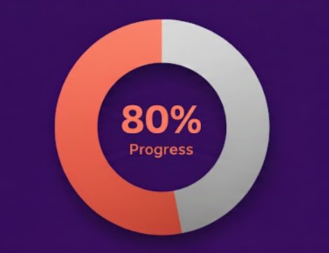
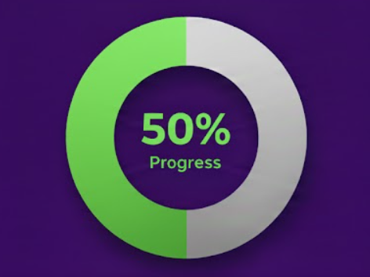
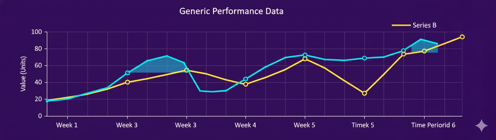

Foco na conclusão de tarefas prioritárias e gestão de tempo em novos desenvolvimentos. Verifique o backlog.

CONFORMIDADE (SLA)
Avaliação do cumprimento do Acordo de Nível de Serviço. Alta performance na resolução de chamados prioritários (Nível 1).

UTILIZAÇÃO DE RECURSOS
Uso atual de memória e CPU do servidor de produção. Necessária otimização do script de processamento noturno.
ADOÇÃO DO FRONT-END
Métrica principal do último sprint
64%
Adoção da nova biblioteca de componentes UI. A meta de 90% não foi atingida, necessitando de treinamento adicional para a equipe de integração.
O prazo de implementação do recurso de login social foi postergado em 3 dias devido a dependências externas no backend. O impacto no cronograma é mínimo.
PROGRESSO DE TAREFAS
Andamento por categoria de projeto
Desenvolvimento de Funcionalidades
Correções de Bugs e Debounce
Otimização de Performance

DISTRIBUIÇÃO REGIONAL
Usuários ativos por continente (Últimos 30 dias)
A América do Sul e a Europa apresentam as maiores taxas de crescimento de usuários (com 70% e 85% de representação, respectivamente). É crucial manter o foco nesses mercados.
LOG DE ATIVIDADES
Eventos críticos e notificações do sistema
ERRO CRÍTICO (DB)
Falha na sincronização do banco de dados secundário. A equipe de infraestrutura foi notificada e a correção está em andamento.
NOVO DEPLOY (v2.1.0)
Nova versão do Front-End publicada em ambiente de produção com sucesso. Todos os testes de regressão foram aprovados e a estabilidade está em 99.8%.
AVISO DE CAPACIDADE
O servidor de cache atingiu 90% de sua capacidade. Recomendamos aumentar o limite ou otimizar a política de expiração de dados.